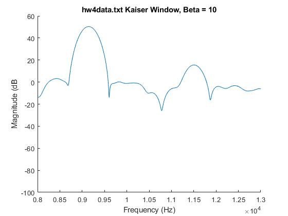
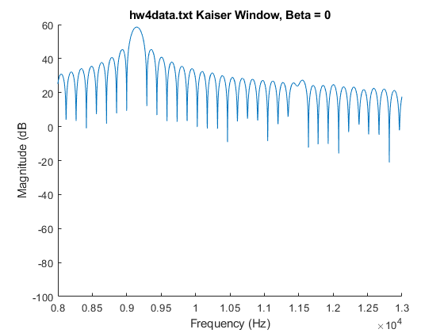

Contents
fprintf('NEW INSTANCE \n');
directory = 'C:\Users\vifro\OneDrive\Documents\MATLAB';
file_name = 'hw4data.txt';
file_path = fullfile(directory, file_name);
x = load(file_path);
x = x(:);
NEW INSTANCE
Fs = 75 * 1000;
N = length(x);
NFFT = 32768;
f = linspace(0, Fs, NFFT);
beta = 10;
figure;
hold on;
win = kaiser(N,beta);
x_win = x .* win;
fft_x_win = fft(x_win,NFFT);
fft_x_win_dB = 20 * log10( abs(fft_x_win) + 0.0000000000001);
plot(f, fft_x_win_dB);
xlim([8000 13000]);
ylim([-100 60]);
hold off;
xlabel('Frequency (Hz)');
ylabel('Magnitude (dB');
title('hw4data.txt Kaiser Window, Beta = 10');
ind_large = find(f >9000 & f < 10000);
[M_large, I_large] = max(fft_x_win_dB(ind_large));
f_large = f(ind_large(I_large));
ind_small = find(f > 11000 & f < 12000);
[M_small, I_small] = max(fft_x_win_dB(ind_small));
f_small = f(ind_small(I_small));

calculate amplitude in V
fprintf('NEW INSTANCE \n');
A_large = 2 * abs(fft_x_win(ind_large(I_large))) / sum(win);
A_small = 2 * abs(fft_x_win(ind_small(I_small))) / sum(win);
NEW INSTANCE
fprintf('Large Component Frequency, Hz = %.4f\n',f_large);
fprintf('Large Component Amplitude, V = %.4f\n', A_large);
fprintf('Small Component Frequency, Hz = %.4f\n',f_small);
fprintf('Small Component Amplitude, V = %.4f\n', A_small);
Large Component Frequency, Hz = 9146.3973
Large Component Amplitude, V = 3.2987
Small Component Frequency, Hz = 11503.9521
Small Component Amplitude, V = 0.0598
Testing out different beta = 0, see if same result (it's the same, mostly)
directory = 'C:\Users\vifro\OneDrive\Documents\MATLAB';
file_name = 'hw4data.txt';
file_path = fullfile(directory, file_name);
x = load(file_path);
x = x(:);
Fs = 75 * 1000;
N = length(x);
NFFT = 32768;
f = linspace(0, Fs, NFFT);
beta = 0;
figure;
hold on;
win = kaiser(N,beta);
x_win = x .* win;
fft_x_win = fft(x_win,NFFT);
fft_x_win_dB = 20 * log10( abs(fft_x_win) + 0.0000000000001);
plot(f, fft_x_win_dB);
xlim([8000 13000]);
ylim([-100 60]);
hold off;
xlabel('Frequency (Hz)');
ylabel('Magnitude (dB');
title('hw4data.txt Kaiser Window, Beta = 0');
ind_large = find(f >9000 & f < 10000);
[M_large, I_large] = max(fft_x_win_dB(ind_large));
f_large = f(ind_large(I_large));
ind_small = find(f > 11000 & f < 12000);
[M_small, I_small] = max(fft_x_win_dB(ind_small));
f_small = f(ind_small(I_small));
fprintf('NEW INSTANCE \n');
A_large = 2 * abs(fft_x_win(ind_large(I_large))) / sum(win);
A_small = 2 * abs(fft_x_win(ind_small(I_small))) / sum(win);
fprintf('Beta = 0, Large Component Frequency, Hz = %.4f\n',f_large);
fprintf('Beta = 0, Large Component Amplitude, V = %.4f\n', A_large);
fprintf('Beta = 0, Small Component Frequency, Hz = %.4f\n',f_small);
fprintf('Beta = 0, Small Component Amplitude, V = %.4f\n', A_small);
NEW INSTANCE
Beta = 0, Large Component Frequency, Hz = 9146.3973
Beta = 0, Large Component Amplitude, V = 3.3016
Beta = 0, Small Component Frequency, Hz = 11552.0188
Beta = 0, Small Component Amplitude, V = 0.0907
